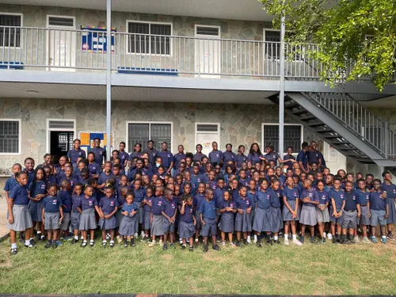
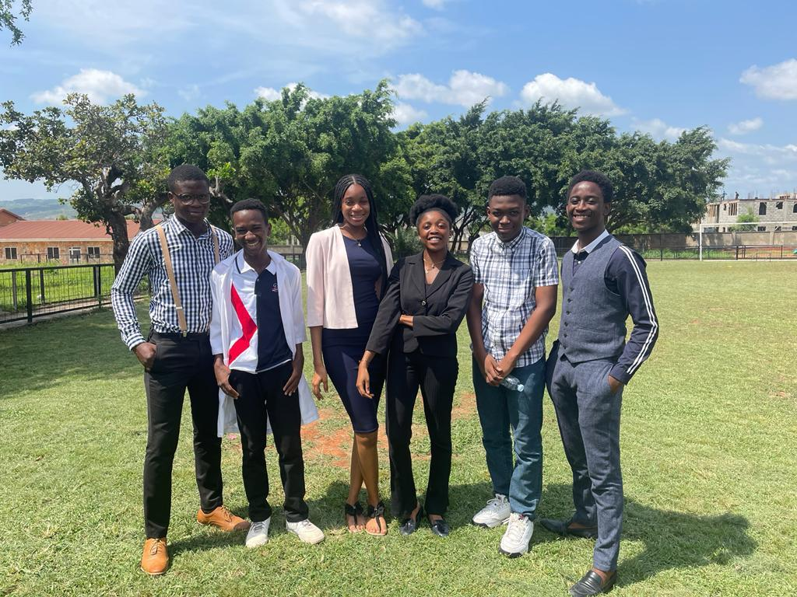
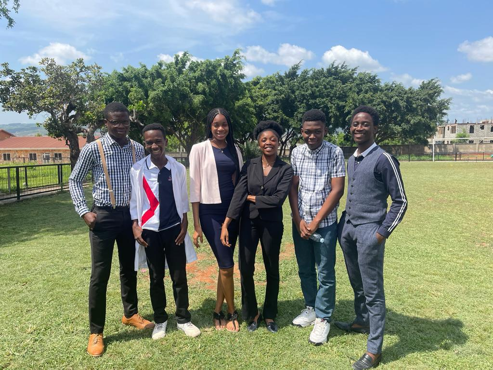

WELCOME TO
Agape Academy International
Agape Academy International, owned and operated by Agape Gospel Mission (AGM), was founded in 2007 for the sole purpose of providing excellent Christian education for the children of the Agape Children’s Home (ACH). In 2013, AGM decided to extend this ministry to help vulnerable Children at Risk (CAR) in our community. The student body was then comprised of children resident at ACH and selected community children at risk who were invited and sponsored to attend the school. The overwhelmingly positive academic and spiritual impact of the school was quickly seen on all students. In consideration of the socialization needs of the ACH students and the added benefit of larger class sizes and more student interaction, the leadership of AGM also took the decision in 2013 to invite select families to enroll and pay tuition. This expanded the student body to children from ACH, CAR, and select paying students. The purpose of the school remained unchanged – to provide quality education for the children of ACH. In discharging that mission, the school had also found a way to support vulnerable children in society and bless Christian families.

 
